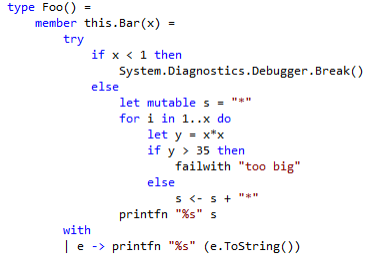

Funkcionalno programiranje je oblik programiranja koji pokušava izbjeći mijenjanje stanja i promjenjivih podataka. U funkcionalnom programu, izlaz funkcije uvijek mora biti isti, s obzirom na točne ulaze u funkciju.
To je zato što se izlazi funkcije u funkcionalnom programiranju oslanjaju samo na argumente funkcije i ne postoji magija koja se događa iza scene. To se zove uklanjanje nuspojava u vašem kodu.
Na primjer, ako nazivate funkciju getSum (), izračunava zbroj dvaju ulaza i vraća zbroj. S obzirom na iste ulaze za x i y, uvijek ćemo dobiti isti output za zbroj.
To omogućuje da funkcija programa bude izuzetno predvidljiva. Svaka mala funkcija čini svoj dio i samo njegov dio. Omogućava vrlo modularan i čist kod koji svi rade zajedno u harmoniji. Ovo je također lakše kada se radi o ispitivanju uređaja.
Neki primjeri funkcionalnih programskih jezika uključuju Lisp, Clojure i F#
Funkcionalno programiranje je jezik koji se usredotočuje na izračun “čistih” funkcija. Ključna riječ je "čista" - sve se vrti oko čuvanja svega "čistim". Što točno mislimo pod “čistim”?
Postoji potpuno razdvajanje između podataka programa i ponašanja programa Svi objekti stvoreni u funkcionalnom programiranju nepromjenjivi su (nakon što se nešto stvori, ne može se mijenjati) Izbjegava se zajedničko stanje (objekti ne dijele opseg s drugim objektima).
Čista funkcija je funkcija u kojoj povratna vrijednost ovisi samo o ulazu (ako unesete istu vrijednost, uvijek ćete vratiti istu vrijednost). Nema nuspojava (na primjer: nema mrežnih ili baznih poziva koji bi mogli utjecati na vrijednost povratka). Ne mijenjaju podatke koji su prošli u njih. Želimo samo opisati kako će se unos promijeniti.